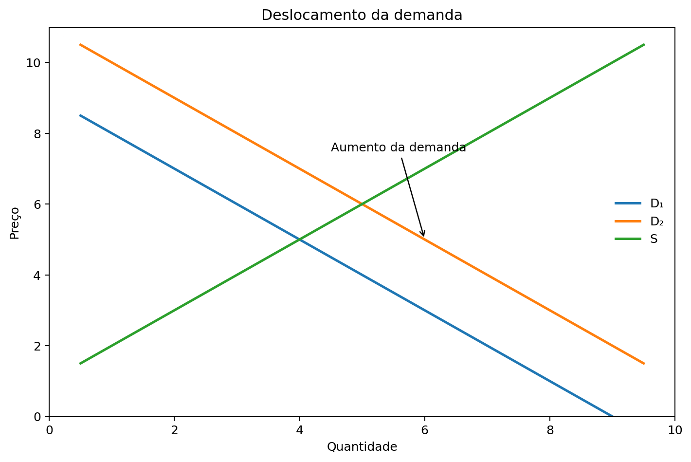
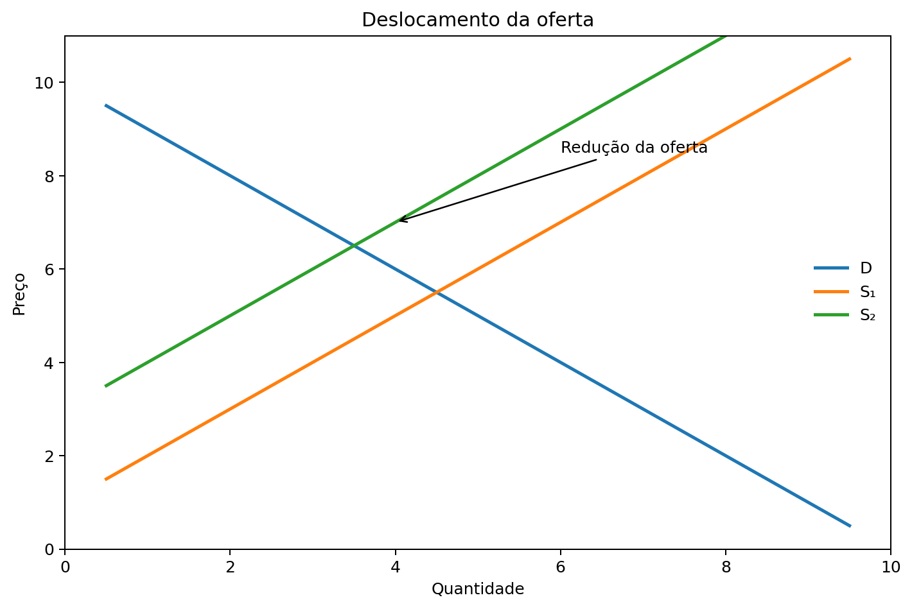
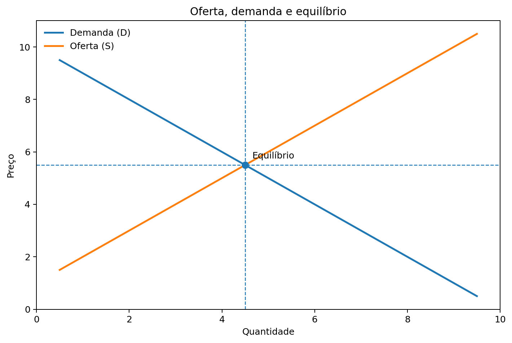
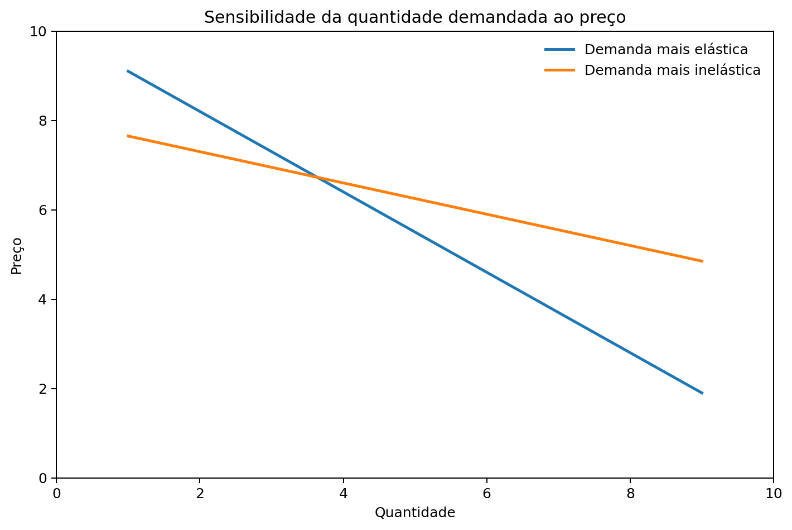

Aula 2 — Oferta, demanda e elasticidade
07 — Excesso de demanda e excesso de oferta
08 — Como analisar mudanças no equilíbrio
10 — Elasticidade-preço da demanda
11 — O que determina a elasticidade da demanda?
12 — Demanda elástica, inelástica e unitária
13 — Elasticidade e receita total
14 — Outras elasticidades da demanda
Ao final desta aula, você deverá ser capaz de:
Um mercado é o conjunto de compradores e vendedores de determinado bem ou serviço.
Os compradores determinam a demanda.
Os vendedores determinam a oferta.
No modelo competitivo básico, nenhum comprador ou vendedor isolado controla o preço. O preço emerge da interação entre oferta e demanda.
Aplicação
Pense no mercado de refeições próximas a um campus. Há vários consumidores e diferentes estabelecimentos. O preço e a quantidade negociada dependem das decisões dos dois lados.
A quantidade demandada é a quantidade de um bem que os compradores desejam e podem comprar.
Mantidas as demais condições constantes:
quando o preço aumenta, a quantidade demandada tende a diminuir; quando o preço diminui, a quantidade demandada tende a aumentar.
Por isso, a curva de demanda tem inclinação negativa.
Cuidado
Uma mudança no preço do próprio bem provoca movimento ao longo da curva de demanda. Ela não desloca a curva.
A demanda muda quando se altera a quantidade que consumidores desejam comprar a cada preço.
Entre os fatores destacados no capítulo:
Substitutos: o aumento do preço de um pode elevar a demanda pelo outro.
Complementares: o aumento do preço de um pode reduzir a demanda pelo outro.

A quantidade ofertada é a quantidade de um bem que os vendedores desejam e podem vender.
Mantidas as demais condições constantes:
quando o preço aumenta, a quantidade ofertada tende a aumentar; quando o preço diminui, a quantidade ofertada tende a diminuir.
Por isso, a curva de oferta tem inclinação positiva.
Cuidado
Uma mudança no preço do próprio bem provoca movimento ao longo da curva de oferta. Ela não desloca a curva.
A oferta se desloca quando muda a quantidade que os produtores desejam vender a cada preço.
Fatores importantes:
Se aumenta o preço de um insumo importante, produzir se torna mais caro. Mantidas as demais condições, a oferta tende a diminuir.

O equilíbrio ocorre no ponto em que a quantidade demandada é igual à quantidade ofertada.
O preço correspondente é o preço de equilíbrio.
A quantidade correspondente é a quantidade de equilíbrio.

A quantidade demandada supera a quantidade ofertada.
Temos excesso de demanda, ou escassez do bem naquele preço.
Há pressão para o preço subir.
A quantidade ofertada supera a quantidade demandada.
Temos excesso de oferta.
Há pressão para o preço cair.
O papel do preço
No modelo competitivo, os movimentos de preços ajudam a coordenar as decisões de compradores e vendedores.
Mankiw propõe três passos:
Demanda → direita.
Resultado, mantida a oferta:
preço de equilíbrio ↑
quantidade de equilíbrio ↑
Oferta → esquerda.
Resultado, mantida a demanda:
preço de equilíbrio ↑
quantidade de equilíbrio ↓
Movimento ≠ deslocamento
Se a demanda aumenta e o preço sobe, pode ocorrer aumento da quantidade ofertada, sem aumento da oferta. A firma se move ao longo da mesma curva de oferta.
Oferta e demanda indicam a direção das respostas.
A elasticidade acrescenta outra pergunta:
Qual é o tamanho da resposta?
Elasticidade mede quanto compradores ou vendedores respondem a mudanças nas condições do mercado.
Intuição
Dizer que a demanda cai quando o preço sobe não informa se ela cai muito ou pouco. A elasticidade procura medir essa sensibilidade.
A elasticidade-preço da demanda mede quanto a quantidade demandada responde a uma mudança no preço.
\[ E_d = \frac{\%\Delta Q_d}{\%\Delta P} \]
Como preço e quantidade demandada normalmente variam em direções opostas, o resultado algébrico pode ser negativo. Para classificar a sensibilidade, costuma-se trabalhar com sua magnitude.
Se uma variação de 10% no preço estiver associada a uma variação de 20% na quantidade demandada, a magnitude da elasticidade é 2.
A demanda tende a ser mais elástica quando:
“Alimentos” é uma categoria ampla e possui menos substitutos para o conjunto.
Uma marca ou tipo específico de alimento costuma ter mais alternativas próximas.
Para a Administração
Elasticidade ajuda a pensar como usuários e consumidores podem reagir a alterações de preços, tarifas ou custos associados a um serviço.
Demanda inelástica: magnitude da elasticidade menor que 1.
A quantidade varia proporcionalmente menos que o preço.
Demanda elástica: magnitude maior que 1.
A quantidade varia proporcionalmente mais que o preço.
Elasticidade unitária: magnitude igual a 1.
As variações percentuais têm a mesma magnitude.

A receita total recebida pelos vendedores é:
\[ RT = P \times Q \]
A elasticidade ajuda a compreender o que ocorre com a receita quando o preço muda.
Preço e receita total tendem a variar na mesma direção.
Preço e receita total tendem a variar em direções opostas.
Uma mudança no preço tende a deixar a receita total aproximadamente inalterada.
Se o preço sobe 10%, mas a quantidade comprada cai apenas 2%, a redução da quantidade é proporcionalmente pequena. A receita total tende a aumentar.
Mede quanto a quantidade demandada responde a mudanças na renda.
\[ E_r = \frac{\%\Delta Q_d}{\%\Delta Renda} \]
Ela ajuda a distinguir bens cuja demanda aumenta com a renda daqueles cuja demanda pode diminuir quando a renda aumenta.
Mede quanto a quantidade demandada de um bem responde à mudança no preço de outro bem.
\[ E_{xy} = \frac{\%\Delta Q_x}{\%\Delta P_y} \]
É particularmente útil para analisar substitutos e complementares.
A elasticidade-preço da oferta mede quanto a quantidade ofertada responde a uma mudança no preço.
\[ E_s = \frac{\%\Delta Q_s}{\%\Delta P} \]
Um determinante importante é a capacidade dos produtores de alterar a quantidade produzida.
O tempo também importa: em muitos mercados, a oferta consegue responder mais no longo prazo do que imediatamente.
Os capítulos 4 e 5 fornecem ferramentas complementares.
Permitem analisar:
Permite analisar:
Uma instituição aumenta o preço de determinado serviço em 10%.
Apenas saber que a quantidade demandada deve cair é suficiente para prever o que acontecerá com a receita?
Não. Precisamos saber quão sensível é a quantidade demandada ao preço.
Demanda + Oferta → Equilíbrio → Preço e quantidade
Mudanças nas condições do mercado deslocam as curvas e geram novos equilíbrios.
Elasticidade → intensidade da resposta
Ela permite ir além da direção da mudança e analisar seu tamanho.
Ideia central da Aula 2
Oferta e demanda explicam para onde preço e quantidade tendem a se mover.
Elasticidade ajuda a explicar quanto compradores e vendedores respondem às mudanças.
Usaremos essas ferramentas para analisar intervenções e resultados de mercado.
MANKIW, N. Gregory. Principles of Economics. 8. ed. Cengage Learning, 2018. Capítulos 4 e 5.